The Solar Power Management System is Formosa Solar’s proprietary data platform designed to optimize and monitor power efficiency, safety, and reliability. Prior to 2016, Formosa was solely an investor in power operations and maintenance, utilizing outside vendors to maintain data management. More recently, the company has moved toward greater in-house management capabilities and the proprietary utilization and management of data. Therefore, Formosa wants to build a centralized data platform using a proprietary database which will analyze real-time data and increase data visibility. The platform will additionally integrate historical performance data to assist management decision making.
The other two designers and I divided the work by research methodologies at the start of the research. I was researching and synthesizing to create a User Journey Map, and the other two were working on Pain Points and Personas.I highlighted the text on the transcript, took notes, and structured it into a user journey map, which included the essential steps, pain points, opportunities, and tools while watching the recording.
By conducting several workshops, we gained a deep understanding of the client’s desire to build a management system customized to their own internal needs and working procedures instead of the standard power management system
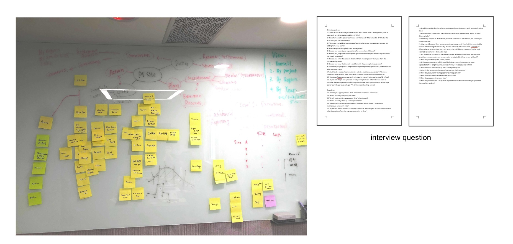In addition, I conducted a competitor analysis to analyze the client’s vendor systems and identify which features are beneficial to users and which require improvement.
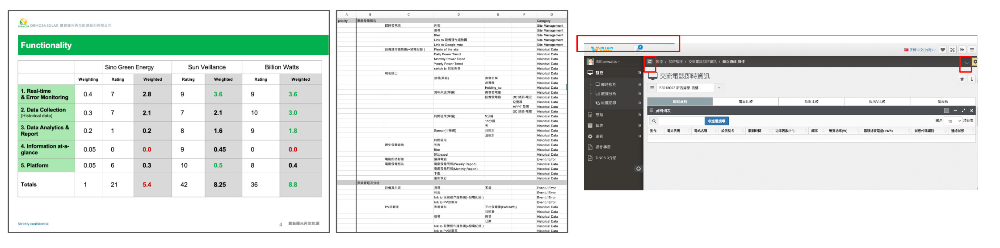Difficulty in making a decision due to a lack of data ownership
Validating and manipulating data manually to convert reports that meet user needs
Managers are unable to see data at a glance
Inability to measure the tendency of the lifetime of PV sites
I gathered thoughts, opinions, and difficulties from the discovery phase and grouped them into six themes; Site Information, Device Information, Analyze & Report, Real-time Monitoring & Historical Data, Project Management, and Maintenance & Error.
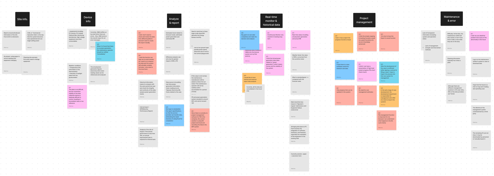After understanding the theme of user needs, I built the information architecture to learn how the platform’s different screens will work and how users would move between them. It also helped stakeholders review designs and understand changes and status, including what is in the current phase, what is in the future phase, and the ability to add additional categories.
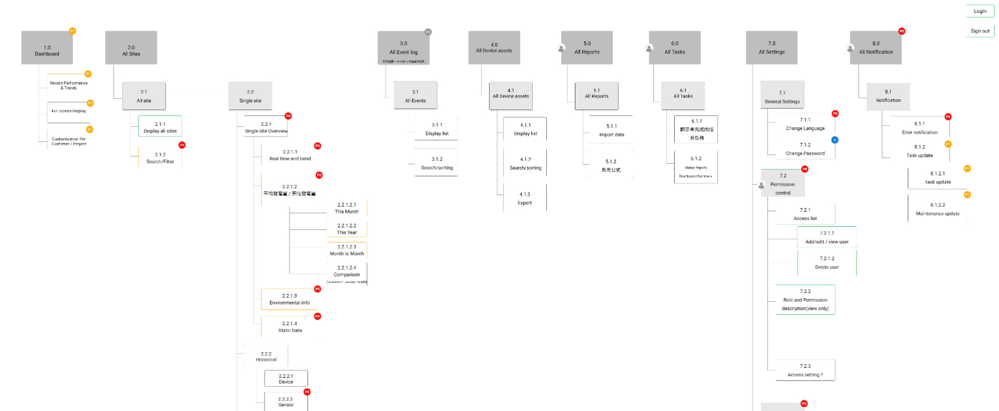To ensure the user experience on navigation is fluid and adaptive, I initially created different wireframes for the structure of the two-level navigation. After deciding on the ideal user experience concept, I began with the Monitoring screen because it was the most complex and important component and would serve as the foundation of the layout. Then, I used the paper wireframes to gather feedback from the team before converting them to digital wireframes.
Taking the Dashboard as an example, before the board meeting, the design process was inefficient, and I had to spend a lot of time and effort on pixels and color every day, which might be changed the next day. So after the board meeting, I convinced the manager to focus on the user needs and used the black and white wireframe to communicate to speed up the work and get the client’s feedback directly.
Also, through the consulting clients, I learned the formulas that needed to show in the platform and converted this knowledge into documentation for development.
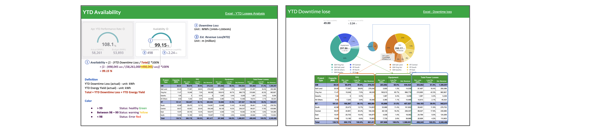I gradually built design systems from the bottom up, gathering components from the design, defining component attributes, and creating a component library. I didn’t spend extra to design the chart style; I worked with the frontend engineer to alter the component from material design and made its color fit our design system.
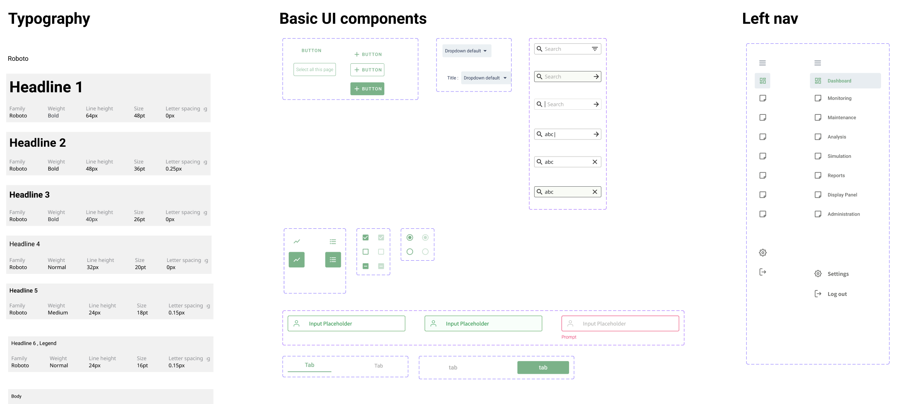The client and I had a weekly design discussion section to receive feedback on designs and gather the needs and requirements for the new functionality. In the admin part, I conducted a test with users who needed to maintain the data. My expectation was that I would receive feedback about the UI/layout or how users use it. However, at the beginning of the testing, users asked if the data would be synced with the ERP system in the future, meaning maintaining two systems is time-consuming and error-prone. Aside from that, users had practiced entering data before the test, despite my request that they do not check the interface beforehand. Even with practice, it still took almost an hour. The takeaway from this test is that users don’t want to maintain data in multiple systems.
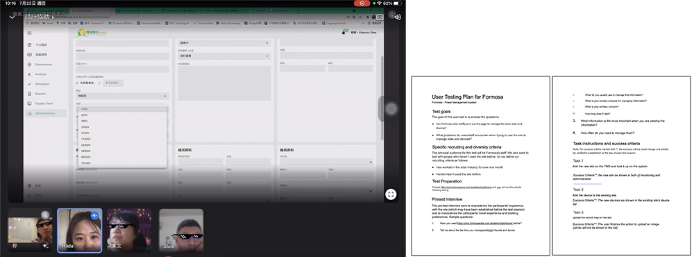Displaying all of the site information in one location allows the user to monitor and view the site’s details easily. There is no need to switch between providers’ management systems to monitor the data.
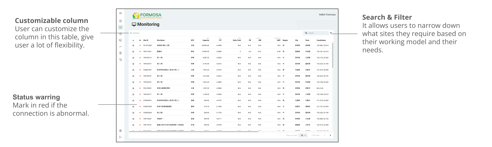In addition to monitoring all sites, users can access a single site by clicking on it. Like the medical records on this site, the records from birth to retirement are all on one page and contain real-time data, device health, maintenance records, and errors.
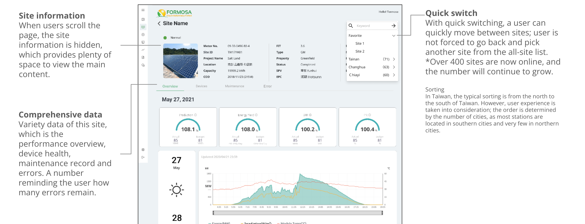Users can simply switch between different data visualizations and select the timeframe that they want under Device.
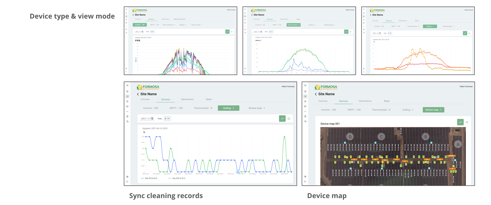According to the current working method, the user must gather data from vendors every month, spend time translating the data into the same format, and then enter the formula to display the data. All data will be stored in the Report under the new design, and the user can take it out and export it directly.
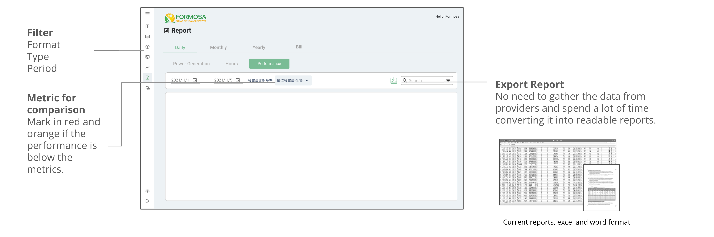The Dashboard gives vital data for all levels of management at a glance. In addition to energy, performance, revenue, and loss are shown here.
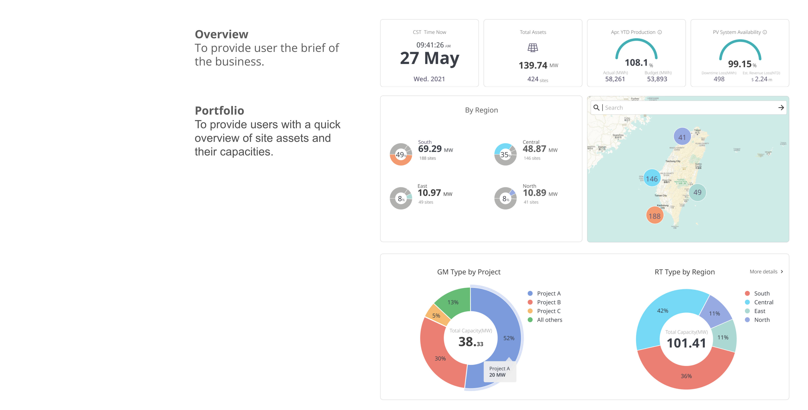 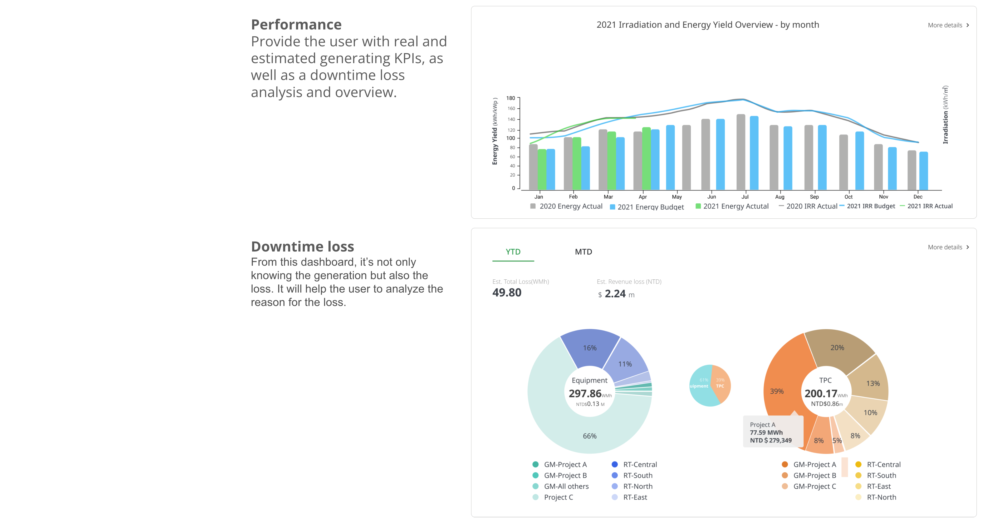“As a UX designer, Hilda always considerate to what client’s need that brings the unique character to the designed project and affected the people around. Very nice to cooperate with Hilda through in-house system development.”
“Hilda, once again, I would like to sincerely express my gratitude and truly appreciate your dedicated efforts on this challenging project. Best wishes for you and look forward to any collaboration opportunities soon in the future.”
“Hilda is an experienced UI/UX designer and able to transform clients’ ambiguous needs into clear, concise, and verifiable system requirements. She always took the initiative to clarify the user needs with clients and discuss the feasibility with engineers. It was really helpful for the project. I really enjoyed working with her.”
Copyright ©. All Rights Reserved.